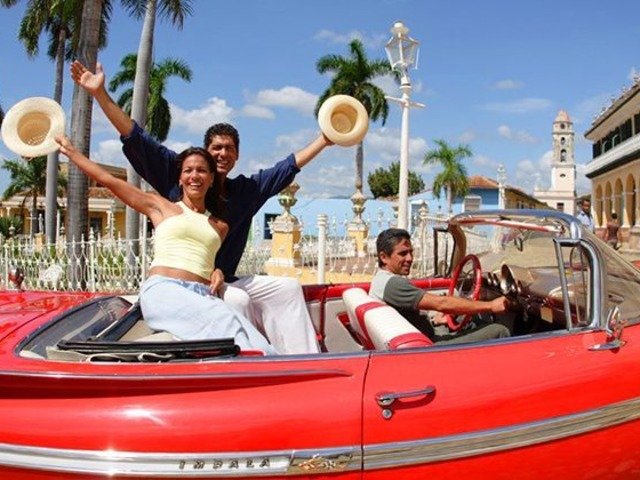
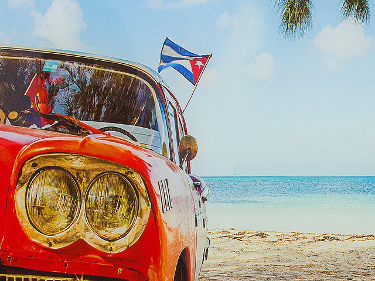
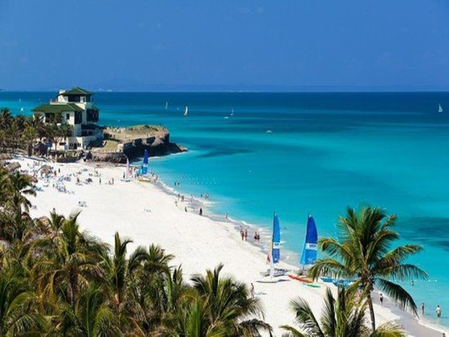
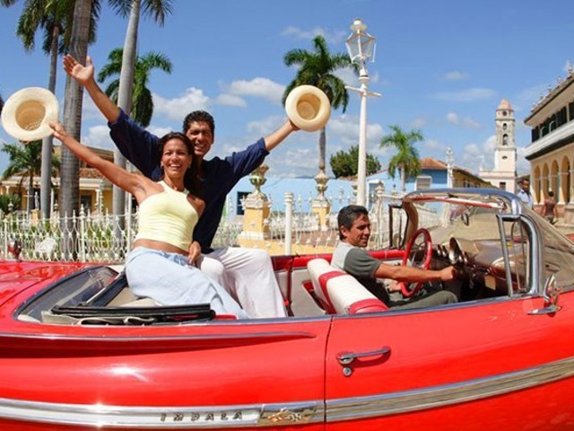
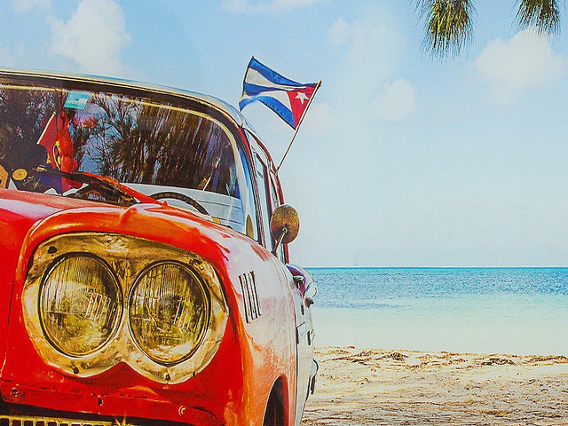
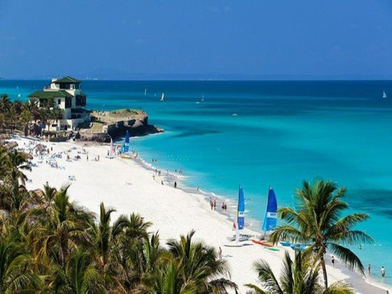

Куба - це ...
Куба - це нескінченне свято, позитивні люди,
які вірять у світле майбутнє, яскраві будинки і вантажні машини і,
звичайно ж, вечірки до ранку. Кращих складових для відмінного відпочинку
і знайти складно.
Історичний спадок
Гавана - це найбільше і найгарніше місто Карибського басейну,
в якому стародавні споруди вдало переплітаються із сучасними будівлями. Добре збереглися
фортеці Ла-Кабанья і Ла-Фуерса (XVII ст.), Кастільо-дель-Морро (XVII ст.) і
Кастільо-де-ла-Пунта, старий бульвар Прадо, Палац витончених мистецтв, монастир Санта-Клара
(1644 р.), кафедральний собор Непорочного Зачаття (1656) і міська ратуша (1792 р.).
У старій Гавані, на Площі Зброї (Пласа-де-Армс), збереглася будівля колишнього палацу
губернатора Куби, а неподалік знаходиться Кафедральна площа Пласа-ву-Катедраль.
Дивовижні пляжі
Варадеро знаходиться знаходиться на півострові Ікакос,
за 130 км на північ від Гавани. Протягом 20 км,
один за іншим, тягнуться прекрасні пляжі з білосніжним
піском і дивовижно блакитною морською водою, які
входять у трійку кращих пляжів світу. В околицях
Варадеро можна відвідати печеру Амбросіо з
наскельними малюнками, національний парк і
дельфінарій.


 




